# 概览
# OSI 七层
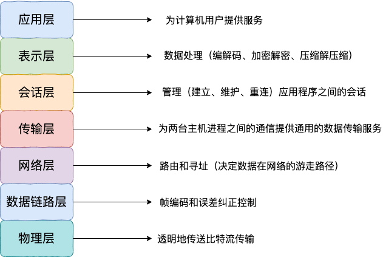
# TCP/IP 四层
<br/>
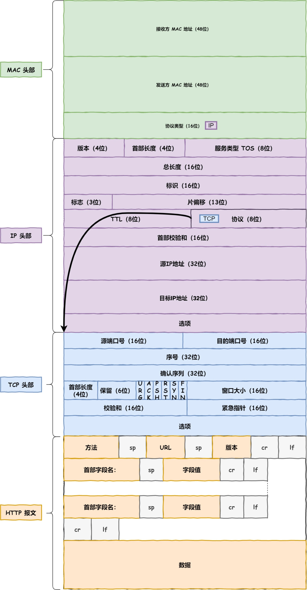
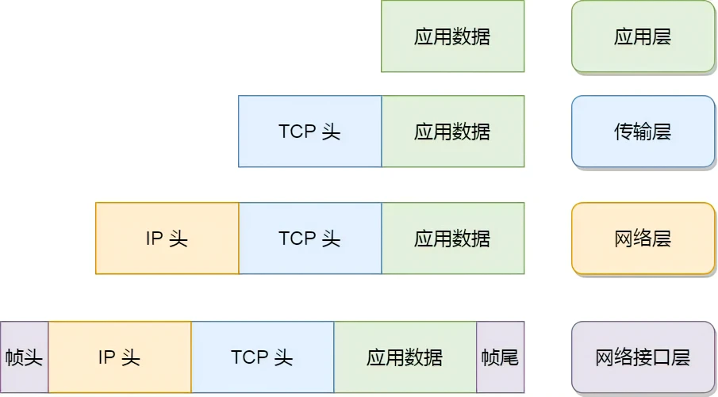
# Linux 收发网络包
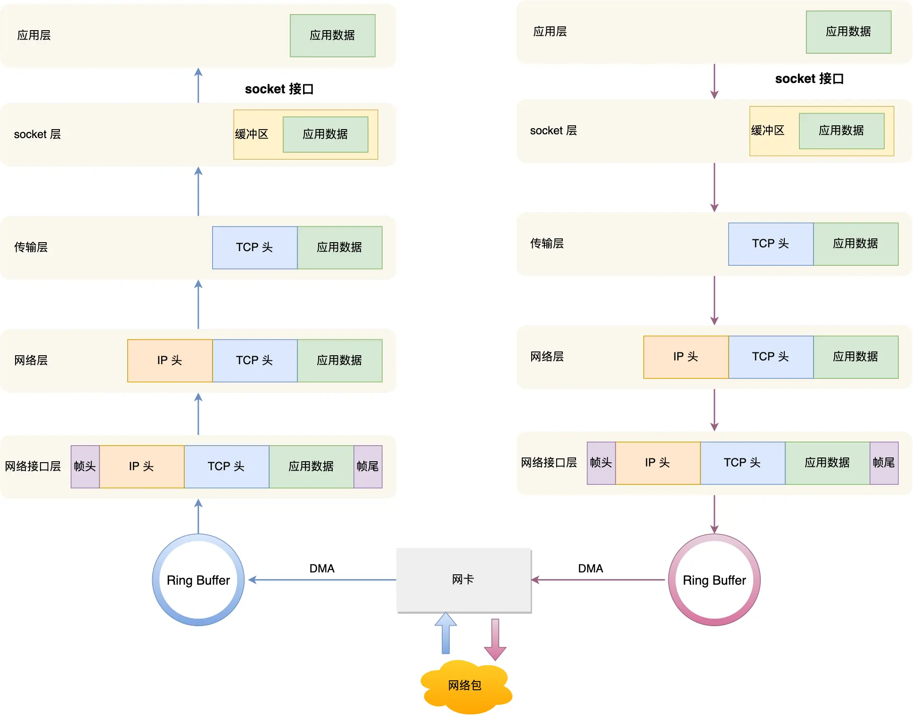
# HTTP
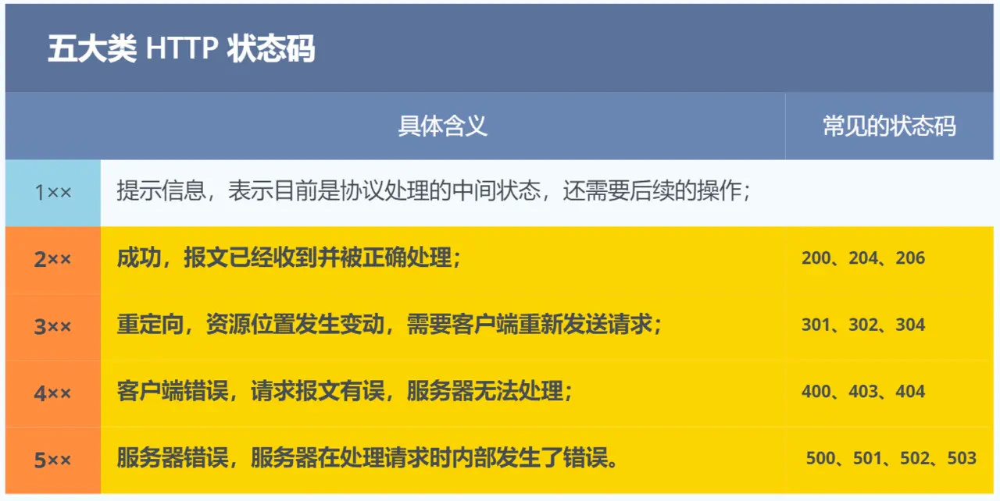
# HTTP 和 HTTPS
# 建立连接

# 安全性
- HTTP 由于是明文传输，所以安全上存在以下三个风险：
窃听风险，比如通信链路上可以获取通信内容，用户号容易没。
篡改风险，比如强制植入垃圾广告，视觉污染，用户眼容易瞎。
冒充风险，比如冒充淘宝网站，用户钱容易没。
- HTTPS 在 HTTP 与 TCP 层之间加入了 SSL/TLS 协议，很好的解决了上述的风险：
信息加密：交互信息无法被窃取，但你的号会因为「自身忘记」账号而没。
校验机制：无法篡改通信内容，篡改了就不能正常显示，
身份证书：证明淘宝是真的淘宝网，但你的钱还是会因为「剁手」而没。
- HTTPS 是如何解决上面的三个风险的？
混合加密的方式实现信息的机密性，解决了窃听的风险。
摘要算法的方式来实现完整性，它能够为数据生成独一无二的「指纹」，指纹用于校验数据的完整性，解决了篡改的风险。
将服务器公钥放入到数字证书中，解决了冒充的风险。
# HTTP 和 RPC
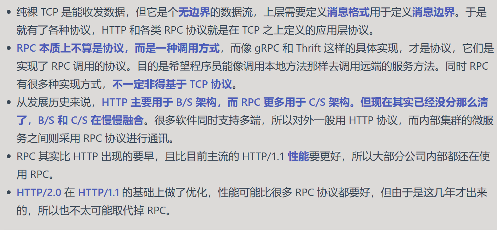
# HTTP 和 WebSocket
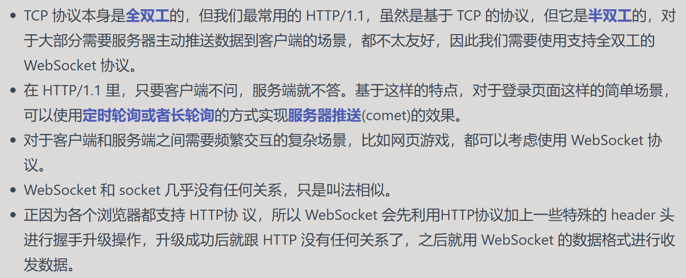
# TCP
# 什么是 TCP
TCP 是面向连接的、可靠的、基于字节流的传输层通信协议。
面向连接：一定是「一对一」才能连接，不能像 UDP 协议可以一个主机同时向多个主机发送消息，也就是一对多是无法做到的；
可靠的：无论的网络链路中出现了怎样的链路变化，TCP 都可以保证一个报文一定能够到达接收端；
字节流：用户消息通过 TCP 协议传输时，消息可能会被操作系统「分组」成多个的 TCP 报文，如果接收方的程序如果不知道「消息的边界」，是无法读出一个有效的用户消息的。并且 TCP 报文是「有序的」，当「前一个」TCP 报文没有收到的时候，即使它先收到了后面的 TCP 报文，那么也不能扔给应用层去处理，同时对「重复」的 TCP 报文会自动丢弃。
# TCP 和 UDP 区别
# 连接
TCP 是面向连接的传输层协议，传输数据前先要建立连接。
UDP 是不需要连接，即刻传输数据。
# 服务对象
TCP 是一对一的两点服务，即一条连接只有两个端点。
UDP 支持一对一、一对多、多对多的交互通信
# 可靠性
TCP 是可靠交付数据的，数据可以无差错、不丢失、不重复、按序到达。
UDP 是尽最大努力交付，不保证可靠交付数据。但是我们可以基于 UDP 传输协议实现一个可靠的传输协议，比如 QUIC 协议
# 拥塞控制、流量控制
TCP 有拥塞控制和流量控制机制，保证数据传输的安全性。
UDP 则没有，即使网络非常拥堵了，也不会影响 UDP 的发送速率。
# 首部开销
TCP 首部长度较长，会有一定的开销，首部在没有使用「选项」字段时是 20 个字节，如果使用了「选项」字段则会变长的。
UDP 首部只有 8 个字节，并且是固定不变的，开销较小。
# 传输方式
TCP 是流式传输，没有边界，但保证顺序和可靠。
UDP 是一个包一个包的发送，是有边界的，但可能会丢包和乱序。
# 分片不同
TCP 的数据大小如果大于 MSS 大小，则会在传输层进行分片，目标主机收到后，也同样在传输层组装 TCP 数据包，如果中途丢失了一个分片，只需要传输丢失的这个分片。
UDP 的数据大小如果大于 MTU 大小，则会在 IP 层进行分片，目标主机收到后，在 IP 层组装完数据，接着再传给传输层。
# 用途
UDP 一般用于即时通信，如：语音、 视频 、直播等。对传输数据的准确性要求不是特别高
TCP 用于对传输准确性要求特别高的场景，比如文件传输、发送和接收邮件、远程登录等
# 建立连接
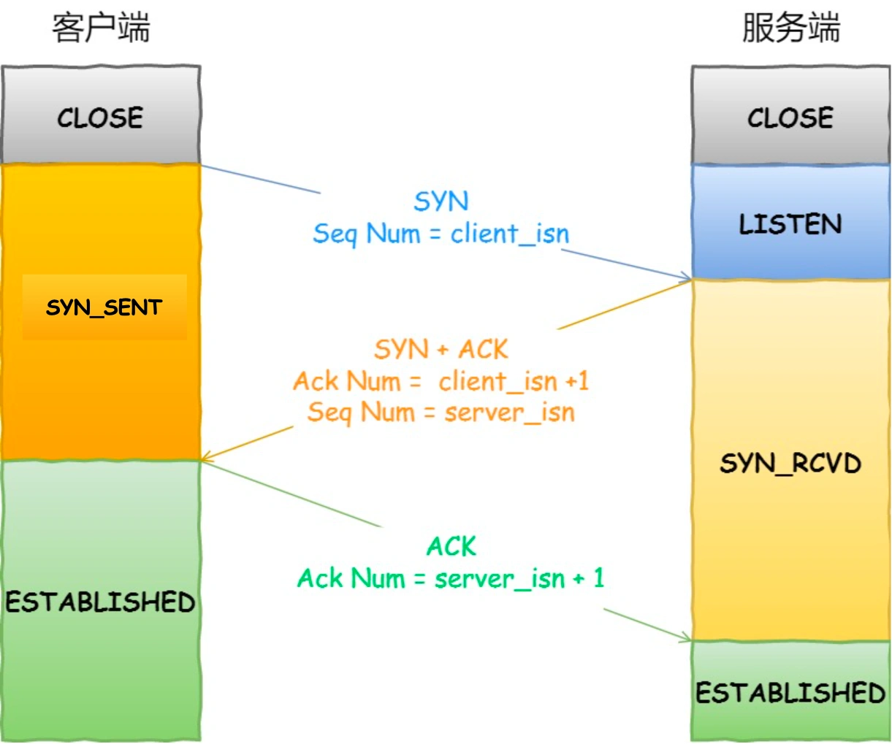
# 连接断开
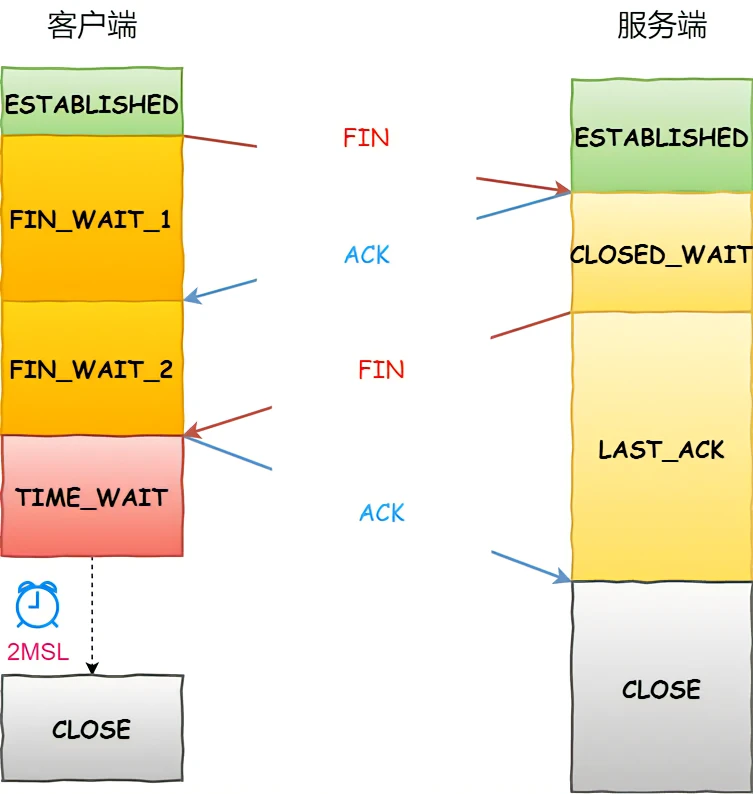
# 流量控制
# 窗口不变
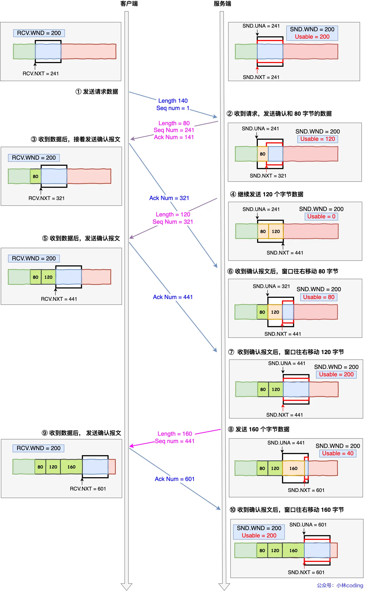
# 窗口收缩
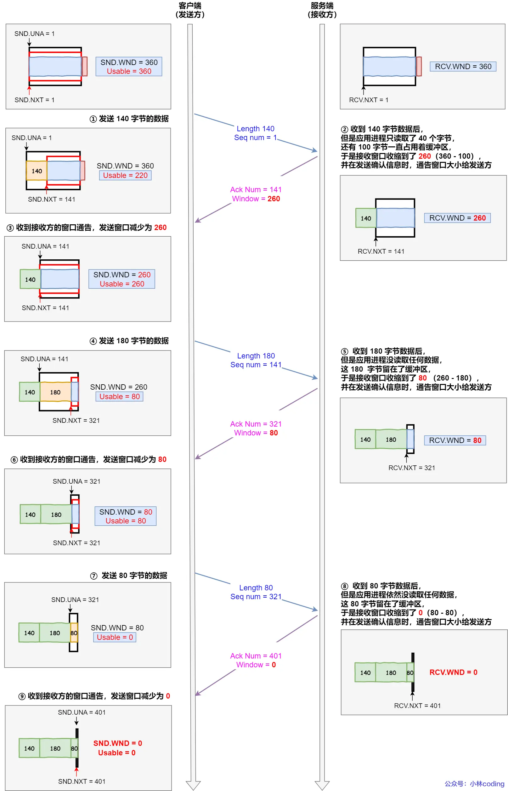
# 拥塞控制
# 超时重传
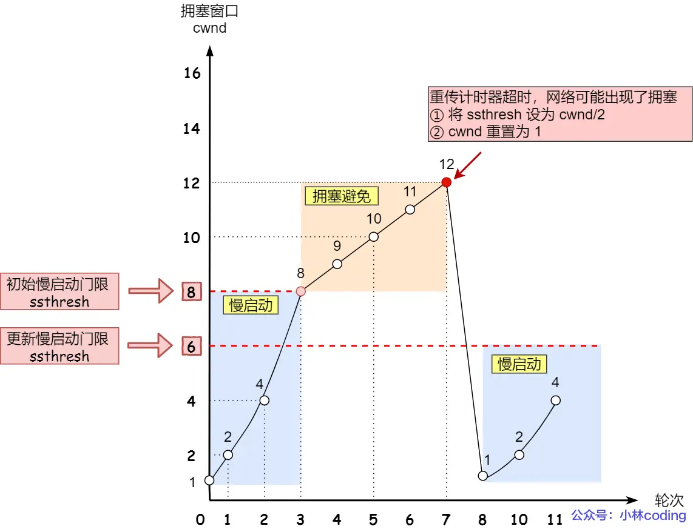
# 快速重传
- 拥塞窗口 cwnd = ssthresh + 3 （ 3 的意思是确认有 3 个数据包被收到了）；
- 重传丢失的数据包；
- 如果再收到重复的 ACK，那么 cwnd 增加 1；
- 如果收到新数据的 ACK 后，把 cwnd 设置为第一步中的 ssthresh 的值，原因是该 ACK 确认了新的数据，说明从 duplicated ACK 时的数据都已收到，该恢复过程已经结束，可以回到恢复之前的状态了
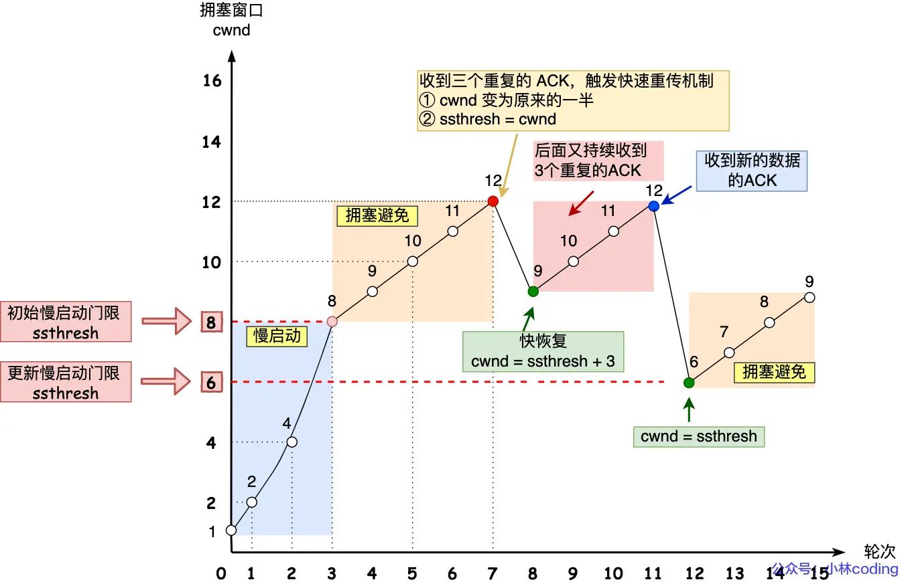
# IP
# IP 地址
# 地址分类
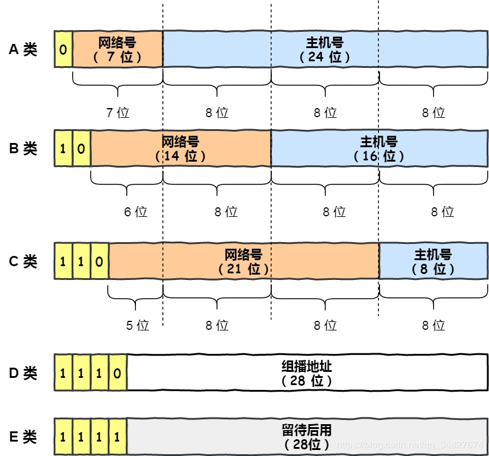
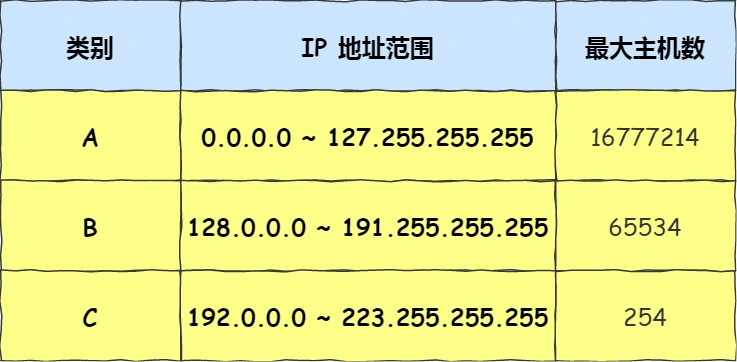
# 路由控制
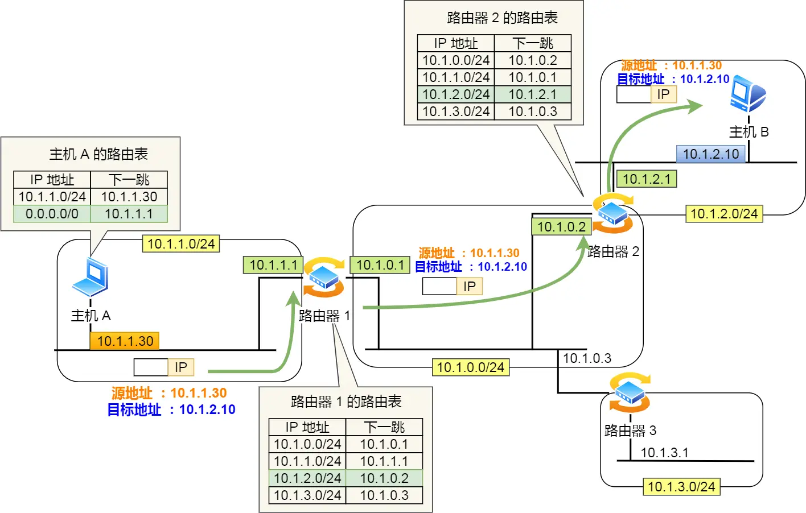
# IP 协议
# ARP 协议
在一个数据链路中通过 IP 地址获得其他设备的 MAC 地址
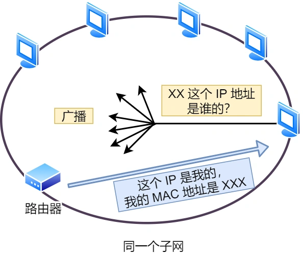
# DHCP 协议
在数据链路中实现统一分配和管理 IP 地址
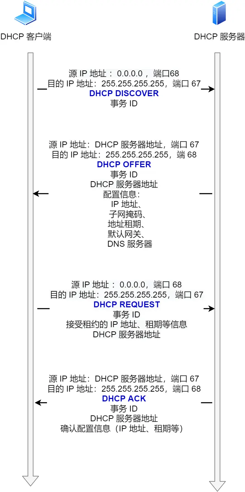
# NAPT 协议
将不同的私有 IP 地址转换为公有 IP 地址 + 端口号
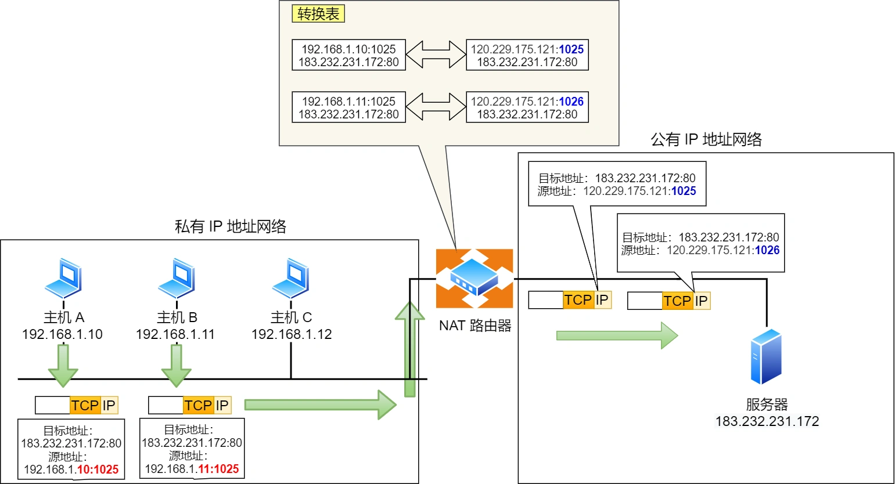
# ICMP 协议
确认 IP 包是否送达目标地址、报告发送过程 IP 包被废弃的原因和改善网络设置等
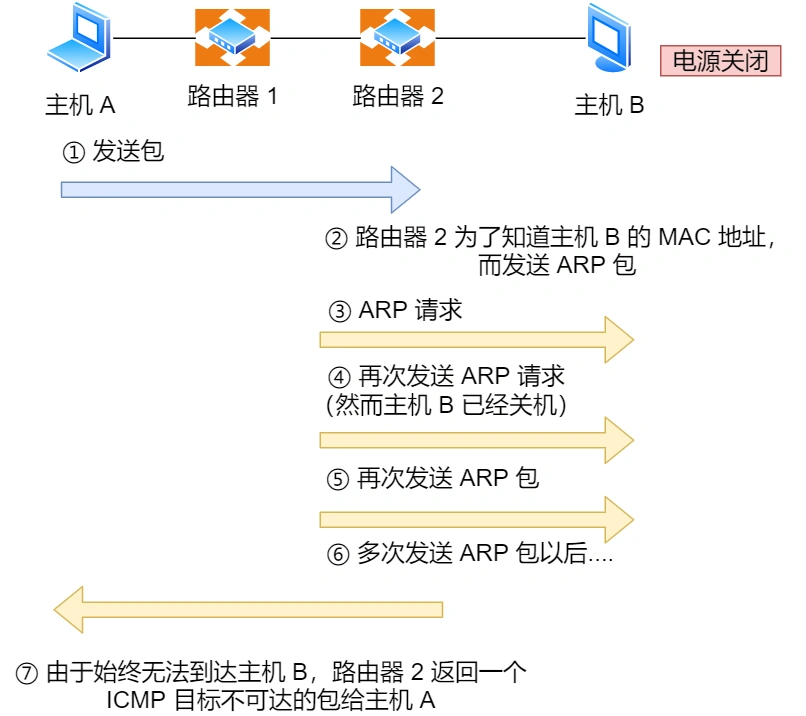
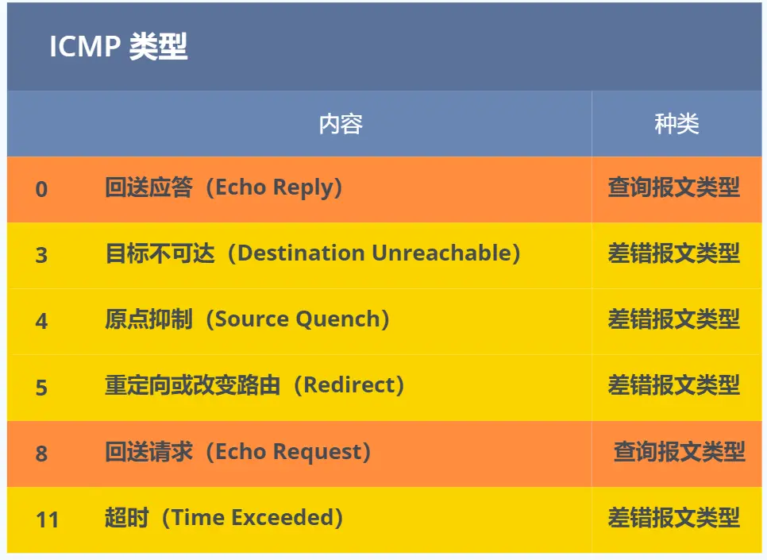